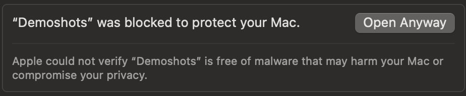

A menu bar app that records your demo on your Mac - a frame every second, your screenshots, and what was said. When you stop, it writes the note. Your audio never leaves the machine.
The whole app. It lives in the menu bar and nowhere else.
That is the whole workflow. Demoshots takes a screen frame about once a second, so the note can say what was on screen and not only what was said. It picks up the ⌘⇧4 screenshots you already take.
Press ⌃⇧M when something matters - a question, an objection, a "can it do X?" - and that moment is flagged in the timeline. If you use Zoom, Demoshots can arm itself when a meeting starts.
Speech runs on your machine with an on-device model. Raw audio is never uploaded - not to us, not to anyone. There is no cloud fallback: if it was recorded, it was transcribed right there.
Every session is a plain folder - meta.json, captures.jsonl, transcript.jsonl, note.md, and the images. Scrub the timeline in the Sessions window, or export a session as a zip and point your own tools at it.
Sync is off by default. With it off, nothing from a recording leaves your Mac. Turn it on and sign in with your email - a link, no password. After each recording, Demoshots uploads the frames, your screenshots, and the transcript text. A few minutes later one email arrives with a link to the note.
Notes are free during the beta while the limits and the storage policy are still being written.
Download the DMG. Open it and drag Demoshots onto the Applications folder next to it.
Open Anyway. The beta is not signed with an Apple Developer ID yet, so the first launch is blocked. Click Done - not Move to Trash. Open System Settings > Privacy & Security, scroll to Security, and click Open Anyway. You do this once. Updates arrive inside the app.

Grant three permissions from the menu: Screen Recording, Microphone, and the Desktop folder for screenshots. The menu has a button for each one.
Record. ⌘⇧R to start, ⌃⇧M to flag, ⌘⇧S to open your sessions.
Requirements: a Mac with Apple silicon (M1 or later), macOS 14.2 or later, about 5 GB of free disk for the speech model and your sessions.
Demoshots records your screen, your microphone, and the other side of the call. It does not announce itself to the people you are talking to. That is on purpose: you are the one party in the room, and telling the others is your job, not the software's.
Tell everyone on the call that you are recording and what for. Recording laws differ between countries and between US states, and some require every participant to agree. Getting that consent, and what you do with the recording afterwards, is on you.